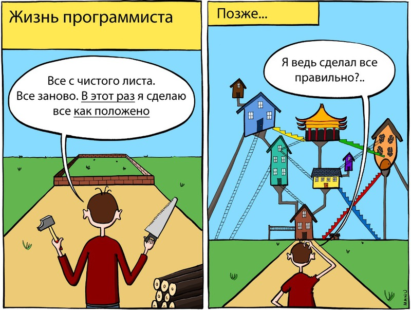

Контактная информация
Дмитрий Смаль
Архитектура ?
- Системная архитектура
- Архитектура решений (solution)
- Архитектура ПО
- Проектирование кода
- Архитектура инфраструктуры
Зачем нужен этот курс ?

Программа курса
- Общая информация об архитектуре и моделировании
- ОПП. Связанность объектов. SOLID. TDD
- Паттерны пользовательского интерфейса. MV*
- Паттерны корпоративных приложений
- Чистая архитекутра. DDD
- Микросервисная архитектура
Структура курса
- 7 смешанных занятий
- теоретия
- консультации по проектам
- 7 домашних заданий
- привязан к выпускному проекту
Определения архитектуры
Архитектура - это набор значимых решений по поводу организации системы,
набор структурных элементов и их интерфейсов, при помощи которых компонуется система,
вместе с их поведением, определяемым во взаимодействии между этими элементами,
компоновка элементов в постепенно укрупняющиеся подсистемы, а также стиль
архитектуры который направляет эту организацию - элементы и их интерфейсы, взаимодействия и компоновку
Свойства
- Определеляется и существует для удовлетворения требований
- Сильно зависит от области применения
- Служит планом для дальнейшей разработки системы
... по крайней мере должна служить
Признаки хорошей архитектуры
Концептуальная простота и элегантность
Небольшие изменения в требованиях не требуют пересмотра архитектуры
С развитием проекта растет кодовая база, но не сложность
Локальность изменений
Сроки разрабокти предсказуемы
Признаки плохой архитекутуры
Малые изменения могут требовать пересмотра архитектуры
Сложность растет вместе с кодовой базой
Частые регрессии
«Невыполнимые» требования
Деморализация команды
Отказ от использования системы
Какие решения приходится принимать?
- Проектирование модели данных
- Разделение на компоненты
- Проектирование интерфейсов компонентов
- Выбор языков и технологий
- Взаимодейсвие и обмен данными между компонентами
На основании чего принимаются решения
- Принципы: DRY, KISS, SOLID ...
- Типовые решения - Patterns
- Интуиция и опыт (увы)
YAGNI
You Ain't Gonna Need It
Keep it Simple, Stupid
- Функции и классы - маленькие
- Минимум компонентов
- Минимум технологий
- Но не меньше чем необходимо...
Zen of Python
Don't repeat yourself
- Избегать дублирования функционала
- Если для изменния логики нужно 3+ однотипных правок кода - это не DRY
- DRY - не всегда нужен: требования «Точно так же, только немного иначе»
Парадигмы программирования
Парадигмы программирования
- Структурное: !goto
- Процедурное: процедуры и функции
- Модульное: разделение функций на модули, библиотеки
- Функциональное: чистота и функции высших порядков
- Объектно-ориентированное: инкапсуляция данных и функций
Парадигмы программирования

Как описать принятые решения?
Диаграммы UML
- классов
- компонентов
- составной структуры
- развёртывания
- объектов
- пакетов
- деятельности
- машины состояний
- сценариев использования
- последовательности
- синхронизации
- сущностей и связей
http://www.uml-diagrams.org/
Диаграмма классов

Диаграмма последовательности

Диаграмма развертывания

Гибкое моделирование
- Итеративное моделирование. Сначала - высокоуровневая архитектура.
- Just Good Enough детализация моделей
- Множество мелких моделей. Ситуационное моделирование.
- Моделирование - для сихнронизации видения команды
- И да, маркеры, доски, фотографии - это ок
http://www.agilemodeling.com/
Домашнее задание 1
- Подготовить UML диаграммы архитектуры вашего проекта
- Указать какие решения являются принципиальными
- Дать логическое обоснование принятых решений